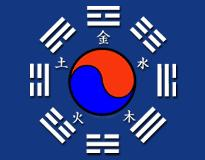

El profundo estudio y entrenamiento del arte marcial nos guía a la comprensión del DO, muchos conocimientos están protegidos o codificados para que solo aquellos que se encuentran preparados, puedan acceder a los secretos del arte marcial. Estas frases simples contienen una guía sin igual para lograr la perfección de la técnica y el desarrollo de la energía interior.
O HENG: 5 ELEMENTOS. ( Tierra-Metal-Madera-Fuego-Agua ) + PAL GUE: 8 DIRECCIONES ( N – S – E – O – NE – SE – NO – SO ).

Nunca descuide nada del Sip Sam Se.
La fuente de la voluntad está en la cintura.
Préstele atención al ligerísimo cambio de lo lleno a lo vacío.
Permita que la energía fluya por todo el cuerpo entero continuamente.
Quietud encarna el movimiento, quietud del movimiento. Busque quietud en el
movimiento.
Cosas sorprendentes sucederán cuando encuentre a su oponente.
Dé conocimiento (sentido, claridad) y propósito a cada movimiento.
Cuando haga correctamente las cosas, todo aparecerá fácil y sin esfuerzo.
En todo momento préstele atención a la cintura (cadera).
Poniendo la conciencia relajada y clara en el abdomen, la energía (Ki) será activada.
Cuando la base de la espina está erguida, la energía sube a la cima de la cabeza.
El cuerpo debe ser flexible. Sostenga la cabeza como si estuviera suspendida de un
cordón.
Manténgase alerta y busque el significado y propósito de su arte.
Doblado y estirado, abierto y cerrado, permita que la naturaleza tome su curso.
Los principiantes son guiados por enseñanza oral. Gradualmente uno se aplica más y
más. La habilidad se ocupará de sí misma.
¿Cuál es el principio fundamental de las artes marciales?.
La mente es el actor primario y el cuerpo el secundario.
¿Cuál es el propósito y filosofía detrás de las artes marciales?.
Rejuvenecimiento y prolongación de la vida más allá de lo normal. Así como una
primavera eterna. Cada fórmula de esta canción tiene enorme valor e importancia.
Dejar de seguir esta canción atentamente, suspirará lejos su tiempo.